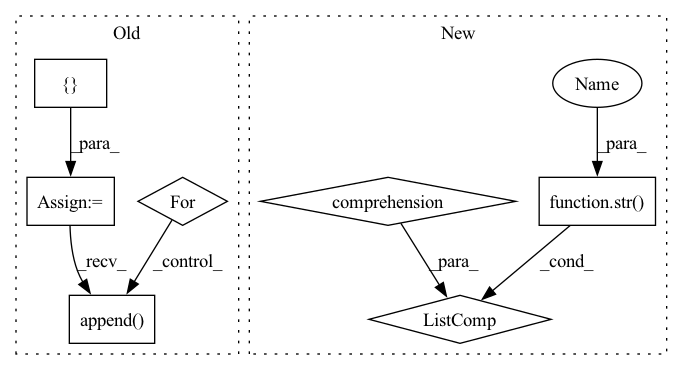

Pattern ID :15271
Before Change
augs: albu.Compose) -> None:
self.img_paths = []
self.mask_paths = []
for img_path in data_dir.glob("images/*.bmp"):
mask_path = data_dir / f"masks/{img_path.stem}.png"
self.img_paths.append(img_path)
self.mask_paths.append( mask_path)
self.augs = augs
After Change
class SomicDataset(Dataset):
def __init__(self, base: Path, augs: albu.Compose) -> None:
self.img_paths = [str(p) for p in base.glob("images/*.bmp")]
self.augs = augs
def __getitem__(self, idx: int):
In pattern: SUPERPATTERN
Frequency: 3
Non-data size: 7
Instances Fragment ID: 51917417
Project Name: taikiinoue/stad
Commit Name: 263b80dac382e9786dc7af6f29152ea79b2336cc
Time: 2020-08-01
Author: taikiinoue45@gmail.com
File Name: stad/datasets/somic.py
M Class Name: SomicDataset
N Class Name: SomicDataset
M Method Name: __init__(3)
N Method Name: __init__(3)
M Parent Class: Dataset
N Parent Class: Dataset
M File Name: stad/datasets/somic.py
N File Name: stad/datasets/somic.py
M Start Line: 15
M End Line: 23
N Start Line: 11
N End Line: 11
Before Change
Returns:
results = AttrDict({
"epoch_losses": [],
"epoch_regularizations": [],
} )
// metrics = AttrDict({})
// for metric in self.metrics:
// metrics[metric.name] = []
total_batches = 0
start = time.time()
for e in range(self.train_config.epochs):
epoch_loss, epoch_reg, batches = self._train_epoch(e, loader)
results["epoch_losses"].append(epoch_loss)
results["epoch_regularizations"].append( epoch_reg)
total_batches += batches
if self.verbose:
print("{}. Epoch {} Loss: {:8.3f}; Regularization: {:8.3f}".format(
e + 1, self.loss_func_name, epoch_loss, epoch_reg))After Change
for e in range(self.train_config.epochs):
self._train_epoch(e, loader)
if self.verbose:
print(e, "Epoch", [str(metric) for metric in self.metrics] )
if self.verbose:
print("Train Time: {:8.4f}".format(time.time() - start)) Fragment ID: 51917420
Project Name: ourownstory/neural_prophet
Commit Name: ea05689f7ccca059223f80c7bd85f8b7943e69d0
Time: 2020-06-16
Author: oskar.triebe@merantix.com
File Name: neuralprophet/neural_prophet.py
M Class Name: NeuralProphet
N Class Name: NeuralProphet
M Method Name: _train(2)
N Method Name: _train(2)
M Parent Class:
N Parent Class:
M File Name: neuralprophet/neural_prophet.py
N File Name: neuralprophet/neural_prophet.py
M Start Line: 277
M End Line: 302
N Start Line: 274
N End Line: 284
Before Change
augs: albu.Compose) -> None:
self.img_paths = []
self.mask_paths = []
for img_path in data_dir.glob("images/*.png"):
mask_path = data_dir / f"masks/{img_path.stem}_mask.png"
self.img_paths.append(img_path)
self.mask_paths.append( mask_path)
self.augs = augs
After Change
class MVTecDataset(Dataset):
def __init__(self, base: Path, augs: albu.Compose) -> None:
self.img_paths = [str(p) for p in base.glob("images/*.png")]
self.augs = augs
def __getitem__(self, idx: int):
Fragment ID: 51917415
Project Name: taikiinoue/stad
Commit Name: 263b80dac382e9786dc7af6f29152ea79b2336cc
Time: 2020-08-01
Author: taikiinoue45@gmail.com
File Name: stad/datasets/mvtec.py
M Class Name: MVTecDataset
N Class Name: MVTecDataset
M Method Name: __init__(3)
N Method Name: __init__(3)
M Parent Class: Dataset
N Parent Class: Dataset
M File Name: stad/datasets/mvtec.py
N File Name: stad/datasets/mvtec.py
M Start Line: 16
M End Line: 24
N Start Line: 12
N End Line: 12